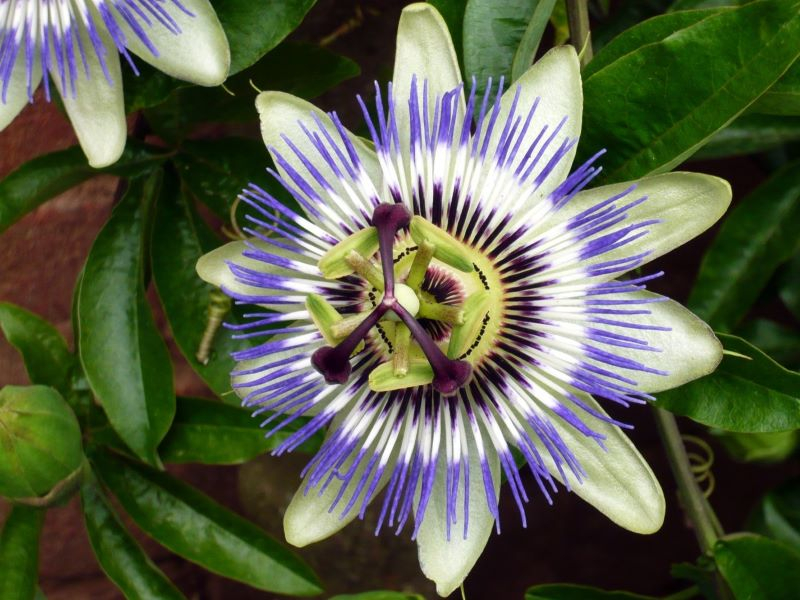
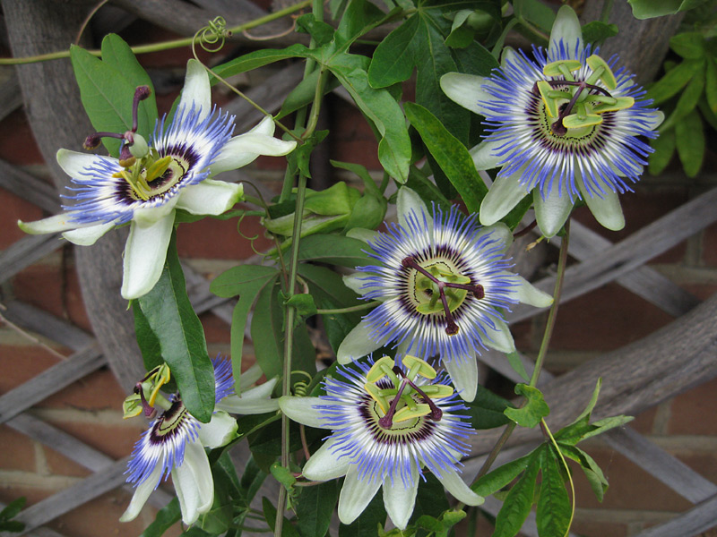
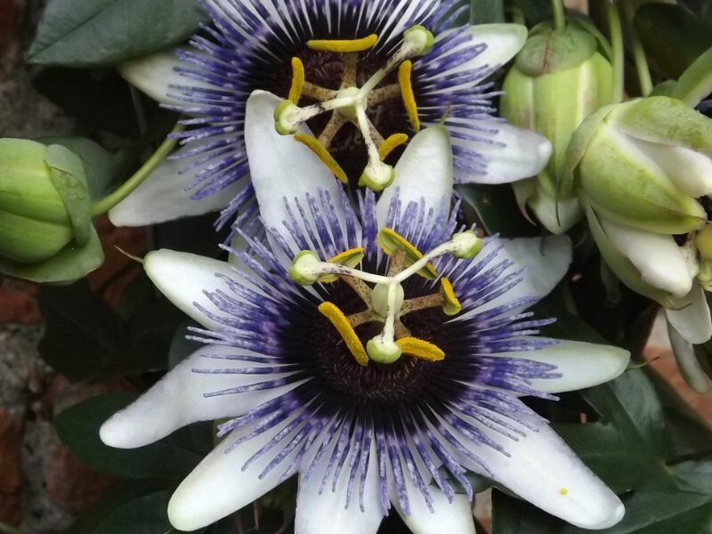
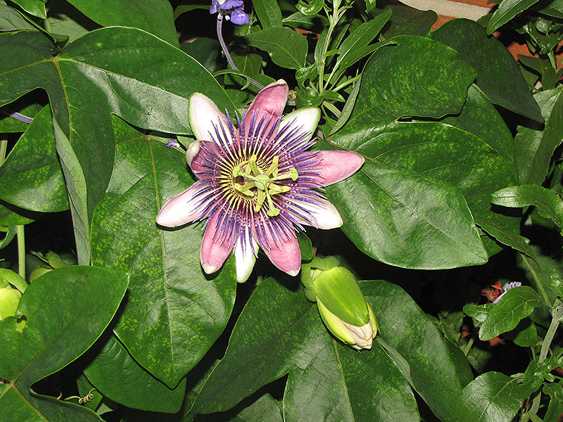

Meaning: Faith
Origin
In the sixteenth century, Jesuit missionaries came across the passionflower in South America. They believed the flower to be a symbol of the Passion of Christ. The ten petals represent the ten faithful apostles, the filaments the crown of thorns, the stamens the five wounds, the ovum the hammer, and the styles the three nails that pierced the hands and feet of Christ.
Gallery



